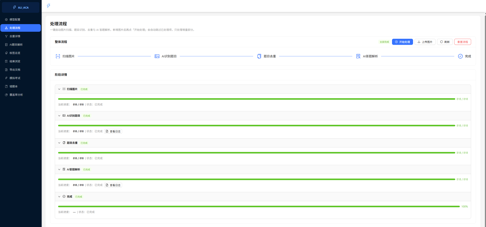
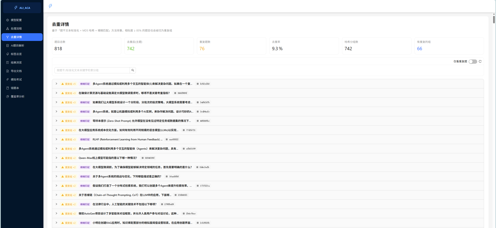
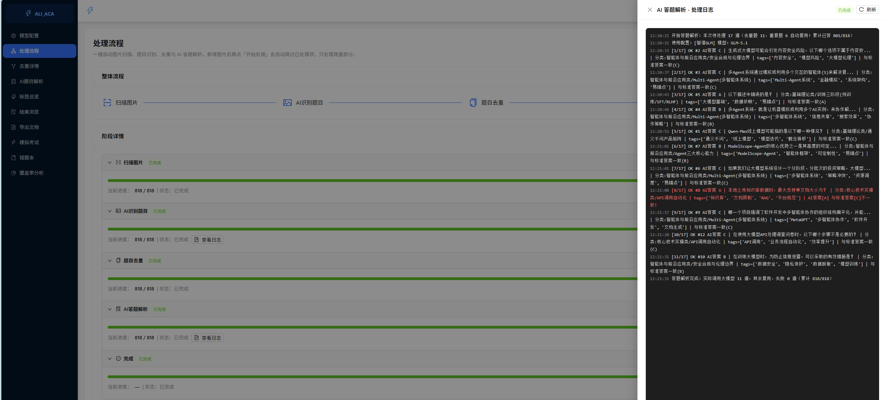
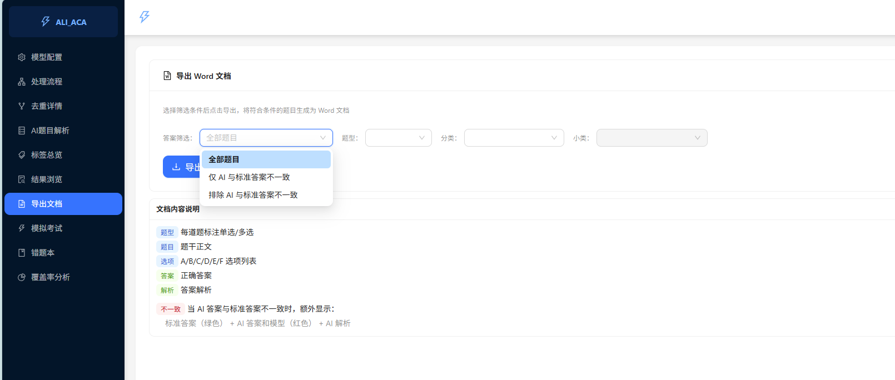
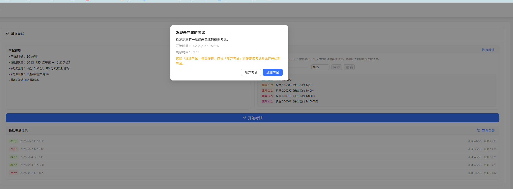
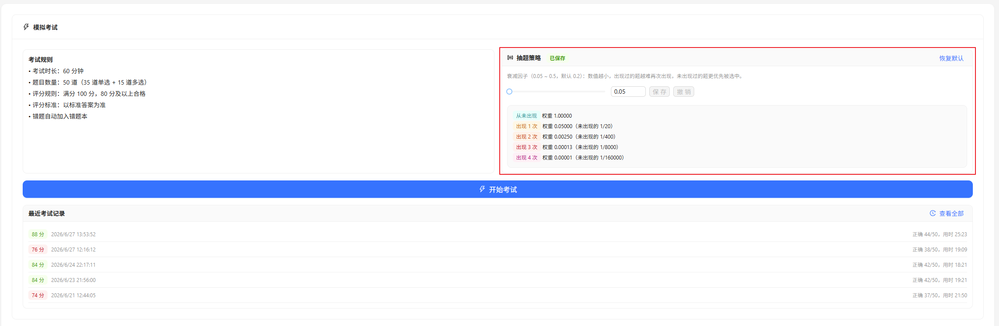
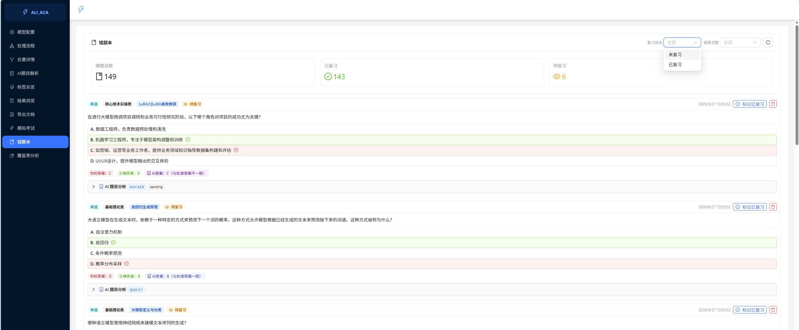
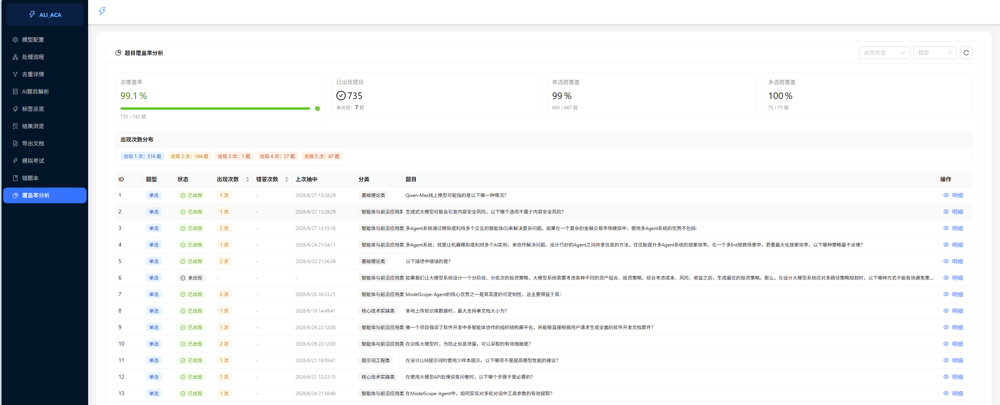
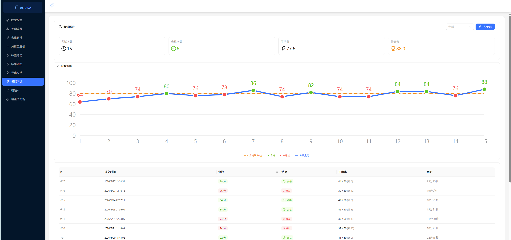

ACA 模拟考试
智能学习平台
从题库处理、去重解析、考试核心到学习辅助，九大核心功能完整演示。
封面页：欢迎观看 ACA 模拟考试系统的功能演示。本次演示按系统菜单顺序展示九大核心功能。
Contents · 功能概览
九大核心功能
01
流程日志保留
处理流程日志按批次分隔标记、历史累积保留。
02
题目去重机制
MD5 精确匹配 + 模糊匹配双重去重、相似度阈值 85%。
03
AI 题目解析
大模型自动答题解析、答案一致性校验、多模型支持。
04
按需导出 Word 文档
按题型/分类/答案一致性筛选导出，不一致题目标注。
05
考试进度恢复
退出可返回、超时自动作废、未完成不可开新考试。
06
抽题策略可视化
加权随机抽题、衰减公式实时展示、5 位小数精度。
07
错题本增强
AI 答案与标准答案对比、可展开 AI 题目分析。
08
覆盖率与题目明细
题目覆盖率统计、点击查看完整题目信息弹窗。
09
分数走势图
SVG 分数走势图含合格基准线、图例底部展示。
目录页：按系统菜单顺序展示，涵盖题库处理与管理、模拟考试核心、学习辅助与数据三大板块。
Section · 01
题库处理与管理
流程日志保留、题目去重、AI 解析、按需导出。
第一章节：题库处理与管理。对应系统菜单：处理流程 → 去重详情 → AI题目解析 → 导出文档。
Feature 01 · 处理流程日志保留
批次分隔标记 · 历史日志累积保留
========== 识别题目批次 2026-06-14 10:23:01 ==========
开始识别题目：本次待处理 28 张（已成功 0，已失败 0）
使用配置：[GLM-4V] 模型：glm-4v
[1/28] OK page_001.png -> 识别 5 题
[2/28] OK page_002.png -> 识别 6 题
识别题目完成：本次成功 28 张，失败 0 张
========== 答题解析批次 2026-06-14 12:18:45 ==========
开始答题解析：本次待答 140 道（已答 0）
使用配置：[GLM-5.1] 模型：glm-5.1
[1/140] OK #12 -> A
[2/140] OK #13 -> BD
答题解析完成：实际调用大模型 140 道，失败 0 道
========== 识别题目批次 2026-06-27 15:30:12 ==========
开始识别题目：本次待处理 5 张（已成功 33，已失败 0）
[1/5] OK page_034.png -> 识别 4 题
识别题目完成：本次成功 5 张，失败 0 张
$
改动前：每次跑流程 clear() 删除日志文件 → 历史丢失
改动后：start_new_batch() 追加分隔标记 → 历史累积保留
演示路径：左侧菜单「处理流程」→ 展开「AI 识别题目」→ 点「查看日志」→ 蓝色分隔线区分不同批次

📷 截图待放入assets/pipeline-log.png
图 1 · 流程日志（蓝色批次分隔线）
流程日志保留：原来每次跑流程会删除日志文件导致历史丢失，现在改为追加分隔标记，所有批次的日志都累积保留，前端蓝色高亮区分批次。
Feature 02 · 题目去重机制
MD5 精确匹配 + 模糊匹配双重去重
1
文本标准化
去除空白、标点、特殊符号，统一转小写，保留中文。为每道题生成标准化文本作为去重基础。
normalize_text()2
MD5 精确匹配
对标准化文本计算 MD5 哈希，相同哈希的题目直接归为同一组。快速识别完全重复的题目。
dedup_hash3
模糊匹配合并
对哈希不同的组，用编辑距离计算相似度。题干相似度 ≥ 85% 且选项相似度 ≥ 85% 时归为重复组。
Levenshtein · 0.854
标记与保留
每组保留 ID 最小的为主题（is_duplicate=False），其余标记为重复并指向主题 ID。重复题不进入考试候选池。
duplicate_of_id
去重详情页
可视化展示去重结果：题目总数、去重后主题数、重复题数、去重率、哈希分组数。
- — 支持关键字搜索分组
- — 「仅看重复题」开关筛选
- — 每组展示标准化文本和 MD5
- — 模糊匹配的组标记紫色标签
去重公式
相似度 = 1 - 编辑距离 / 最大长度
条件：
similarity(题干) ≥ 0.85
且
similarity(选项) ≥ 0.85
→ 归为重复组
演示路径：左侧菜单「去重详情」→ 查看去重统计 → 展开「重复组」查看成员 → 开启「仅看重复题」筛选

📷 截图待放入assets/dedup.png
图 2 · 去重详情页（重复组 + 模糊匹配标记）
题目去重：两阶段去重，先 MD5 精确匹配，再模糊匹配合并相似题。相似度阈值 85%，基于编辑距离计算。
Feature 03 · AI 题目解析
大模型自动答题 · 一致性校验 · 多模型支持
解析流程
识别题目后自动调用大模型答题，生成答案与解析，并与标准答案对比标注一致性。
- — 并发调用大模型，提升处理速度
- — 自动校验 AI 答案与标准答案是否一致
- — 记录模型名、答案、解析、审核状态
- — 失败自动重试，支持断点续传
- — 连续失败保护：超过阈值自动暂停
答案一致性校验
normalize_answer(raw):
1. 去空格/逗号/顿号/分号
2. 统一大写
3. 去括号
_compare_answer(ai, correct):
True → AI 答案正确（蓝标）
False → AI 答案错误（紫标）
None → 无标准答案，无法判断
演示路径：左侧菜单「AI题目解析」→ 查看每题 AI 答案与解析 → 左侧菜单「处理流程」→ 启动 → 查看「AI 答题解析」进度与日志

📷 截图待放入assets/ai-answer.png
图 3 · AI 答题解析（进度 + 日志）
AI 题目解析：大模型自动答题并生成解析，自动校验与标准答案的一致性。支持多模型、并发处理、断点续传。
Feature 04 · 按需导出 Word 文档
多维度筛选 · 一键导出 .docx
筛选维度
支持四个维度组合筛选，精准导出需要的题目。
- — 答案筛选：全部 / 仅不一致 / 排除不一致
- — 题型：单选 / 多选
- — 分类：核心技术、基础理论等
- — 小类：细分子分类
文档内容结构
导出的 Word 文档包含完整题目信息，不一致题目特殊标注。
每道题包含：
题号 + 【题型】
题干正文
A/B/C/D/E/F 选项
答案一致时：
答案 + 解析
答案不一致时（额外标注）：
标准答案（绿色）
AI 答案 + 模型名（红色）
AI 解析
演示路径：左侧菜单「导出文档」→ 选择筛选条件 → 点击「导出 Word 文档」→ 浏览器自动下载 .docx 文件

📷 截图待放入assets/export-word.png
图 4 · 导出 Word 文档（筛选 + 导出按钮）
按需导出：支持按答案一致性、题型、分类、小类筛选导出 Word 文档。不一致题目特殊标注标准答案（绿色）和 AI 答案（红色）。
Section · 02
模拟考试核心
进度可恢复、超时可作废、加权随机抽题策略可视化。
第二章节：模拟考试核心功能。对应系统菜单：模拟考试。
Feature 05 · 考试进度恢复
退出不丢、超时作废、未完成拦截
1
自动保存进度
答题后 3 秒自动静默保存到后端，顶部显示"保存中…"。点击「保存退出」可暂存进度离开。
前端自动保存2
恢复未完成考试
重新进入考试页面自动检测，弹窗显示开始时间与剩余时长，选择「继续考试」即可恢复全部答案。
GET /exam/active3
超时自动作废
超过考试时长（60 分钟）的进行中考试，在访问时自动标记 abandoned_at，无法再回到当时考试。
_expire_overdue_active4
未完成拦截
仍有进行中考试时点「开始考试」返回 409，提示先完成或放弃现有考试，不可同时开多场。
HTTP 409 拦截
演示路径：左侧菜单「模拟考试」→ 开始考试 → 答几题 → 点「保存退出」→ 回到首页 → 再点「开始考试」→ 弹窗提示「发现未完成的考试」→ 点「继续考试」恢复

📷 截图待放入assets/exam-resume.png
图 5 · 考试进度恢复弹窗
核心功能：解决了原来退出考试界面就回不去的问题。重点演示保存退出和恢复流程。
Feature 06 · 智能抽题策略
加权随机 · 衰减公式 · 实时展示
策略原理
对每道题按历史出现次数计算指数衰减权重，出现越多权重越低，优先抽未出现题目，逐步拉平覆盖率。
- — 不放回加权随机，同一套卷不重复
- — 单选 35 题 / 多选 15 题独立抽取
- — 衰减因子 d 可调（0.05 ~ 0.5）
- — 答题进度仅本次结束后批量更新
权重公式（5 位小数）
wi = dci
P(i) = dci / Σ dcj
d = 0.2 时：
c=0 → 1.00000
c=1 → 0.20000 (1/5)
c=2 → 0.04000 (1/25)
c=3 → 0.00800 (1/125)
c=4 → 0.00160 (1/625)
演示路径：左侧菜单「模拟考试」→ 首页「抽题策略」卡片 → 拖动衰减因子滑块 → 权重数值实时更新（5 位小数）

📷 截图待放入assets/pick-strategy.png
图 6 · 抽题策略卡片（权重 5 位小数）
抽题策略：通过指数衰减权重让出现少的题优先被抽，逐步拉平覆盖率。界面实时展示 5 位小数权重。
Section · 03
学习辅助与数据
错题本增强、覆盖率追踪、分数走势可视化。
第三章节：学习辅助与数据。对应系统菜单：错题本 → 覆盖率分析 → 考试历史。
Feature 07 · 错题本增强
AI 答案对比 & 可展开题目分析
🤖
AI 答案一致性
每道错题展示 AI 答案与标准答案对比，一致时蓝色标签，不一致时紫色标签，一目了然。
ai_is_correct: true / false
📖
AI 题目分析
可折叠区域展示 AI 对该题的完整解析，含模型名和审核状态标签，点击展开/收起。
Collapse · ai_explanation
🔍
答案对比标签
你的答案（红）、正确答案（绿）、AI 答案（蓝/紫）三色标签同行展示，快速定位差异。
user_answer vs correct_answer
📊
错答统计
显示每道题的累计错答次数，按错误频率排序，帮助聚焦高频错题。
wrong_count 排序
演示路径：左侧菜单「错题本」→ 任意错题卡片 → 查看 AI 答案对比标签 → 点击「AI 题目分析」展开解析

📷 截图待放入assets/wrong-book.png
图 7 · 错题本（AI 答案对比 + 可展开解析）
错题本增强：新增 AI 答案对比和可展开的 AI 解析，帮助用户理解错题原因。
Feature 08 · 覆盖率分析
题目覆盖率追踪 & 明细查看
覆盖率统计面板
按题型分类展示已出现 / 总题数、覆盖率百分比、每题出现次数与错答次数，支持按状态和题型筛选。
- — 单选 667 道候选池，每次抽 35 道
- — 多选 75 道候选池，每次抽 15 道
- — 未出现的题权重最高，后续优先抽取
题目明细弹窗
每条记录新增「查看明细」按钮，点击弹出 720 宽弹窗，展示完整题目信息。
- — 完整题目文本（不再截断）
- — 全部选项，正确答案高亮绿色
- — AI 答案对比、模型名、AI 解析
- — 出现次数、错答次数、上次抽中时间
演示路径：左侧菜单「覆盖率分析」→ 表格任意行点「查看明细」→ 弹窗展示完整题目 + AI 分析

📷 截图待放入assets/coverage.png
图 8 · 覆盖率分析表格 + 明细弹窗
覆盖率分析：展示题目覆盖情况，每条记录可查看完整明细，包括 AI 答题对比和解析。
Feature 09 · 分数走势图
考试分数走势 & 合格基准线
━━ 合格线 80 分
● 合格
● 未通过
━ 分数走势
演示路径：左侧菜单「模拟考试」→ 顶部「考试历史」→ 统计卡片下方即为分数走势图

📷 截图待放入assets/score-trend.png
图 9 · 分数走势图（合格基准线 + 图例）
分数走势图：纯 SVG/ECharts 实现，橙色虚线为 80 分合格基准线，绿点合格红点未通过，鼠标悬停显示详情。
演示结束
从题库处理、考试核心到学习辅助，九大功能让模拟考试更智能、更可控。
ACA Exam System
FastAPI + React + SQLite
2026 · 功能演示
演示结束，感谢观看。可以通过键盘左右箭头翻页回顾各功能。